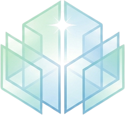
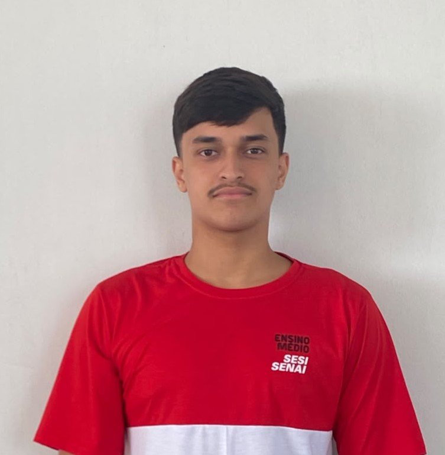
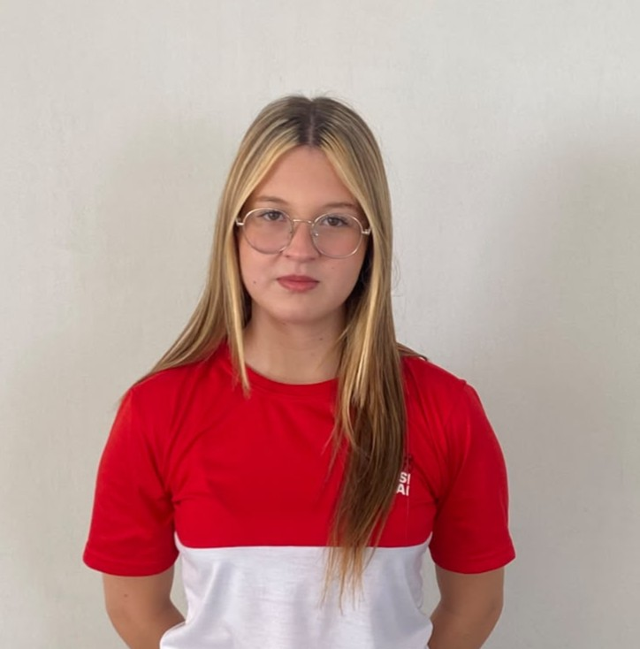

Vinícius Bernardi Sant'Ana
Analista • Front-End • Banco de Dados
Clique para ver as funções
Clear SpacesUma plataforma criada para facilitar a rotina das funcionárias responsáveis pela limpeza, tornando o trabalho mais organizado, rápido e simples.
As funcionárias responsáveis pela limpeza enfrentam diversas dificuldades durante o dia. Nosso projeto nasceu justamente para ajudar a resolver esses problemas.
Muitas vezes é necessário registrar o local antes e depois da limpeza para comprovar que o serviço foi realizado. Isso pode gerar trabalho extra e consumir tempo.
Existem vários ambientes para limpar e, muitas vezes, o tempo disponível para cada atividade é limitado.
Controlar quais ambientes já foram limpos e quais ainda precisam de atenção pode ser difícil durante uma rotina movimentada.
Criamos uma plataforma simples e intuitiva para ajudar as funcionárias a registrar e acompanhar suas atividades de limpeza de maneira rápida.
Registre uma atividade sem precisar passar por processos complicados.
As fotos podem ser registradas diretamente na plataforma, facilitando a comprovação da limpeza.
Botões claros e informações organizadas para que qualquer pessoa consiga utilizar.
O que você deseja registrar?
Sabemos que nem todo mundo possui facilidade com computadores, celulares ou internet. Por isso, pensamos em uma plataforma com poucos botões, textos claros e um funcionamento direto.
A ideia é simples: abrir, entender e usar.
Menos tempo com registros, mais tempo cuidando dos ambientes.
Menos tempo gasto com registros e mais tempo dedicado à limpeza.
Todas as informações podem ser registradas de forma simples em um único lugar.
O registro de antes e depois facilita a comprovação das atividades realizadas.
Uma interface criada pensando principalmente na experiência das funcionárias.
Selecione o ambiente que será limpo.
Faça a atividade normalmente.
Registre a atividade e, quando necessário, as fotos do antes e depois.
Nosso projeto busca facilitar a rotina das funcionárias de limpeza do SENAI, oferecendo mais organização, praticidade e rapidez.
As pessoas por trás do projeto Clear Spaces.
Analista • Front-End • Banco de Dados
Clique para ver as funções
Full-Stack
Clique para ver as funçõesBanco de Dados • Design
Clique para ver as funções
Líder • Front-End • Design
Clique para ver as funções